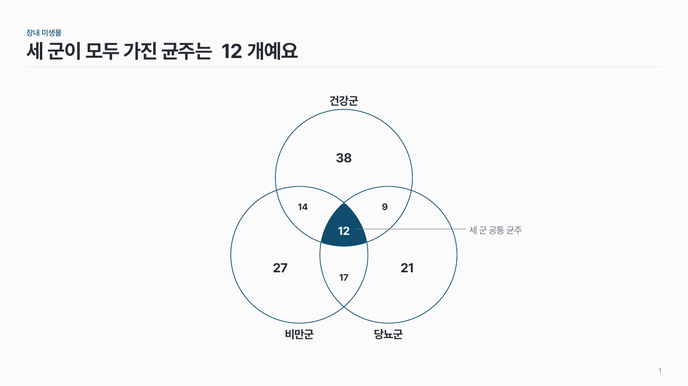
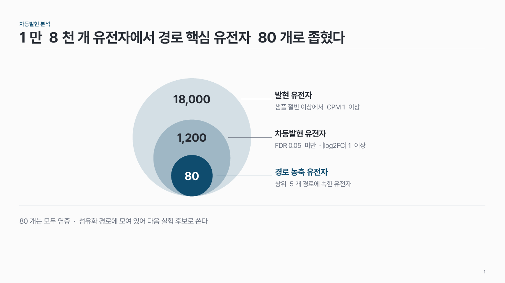
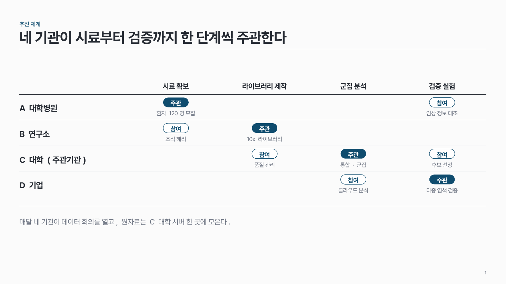
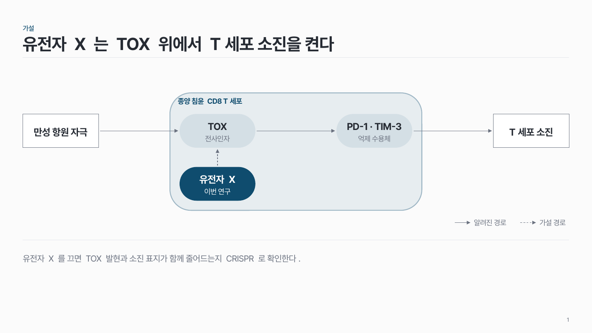

홈 › 구조·관계
구조·관계
누가·무엇이 어떻게 이어지는지 보여 주고 싶어요
이럴 때
연구 수행 체계(누가 무엇을 맡는지), 하나의 중심 개념과 구성 요소, 집합이 겹치는 정도처럼 순서 없이 관계 자체가 메시지일 때예요.
들어가는 것
- 주체·요소마다 이름 한 줄과 역할·설명 한두 줄.
- 관계에 방향이 있으면 선 위에 동사 하나(지원, 이전, 공동 수행).
- 겹침이면 영역마다 수.
강조할 것
중심(총괄 기관, 중심 개념, 교집합) 한 곳만 진한 색으로. 주변은 흰 칸에 옅은 선으로 둬요.
고르는 법
팁
- 좌우 대칭으로 놓고, 노드 크기와 간격을 같게 맞춰요.
- 모든 선에 화살표를 붙이지 않아요. 방향이 있는 관계에만, 동사 라벨과 같이.
- 협력처럼 느슨한 관계는 점선으로 구분해요.
- 노드마다 다른 색을 칠하지 않아요. 강조는 중심 한 곳.
- 층을 쌓은 피라미드 대신 원형·방사형 도식을 써요.
추천 패턴

추진체계 struct-01
맨 위 총괄 노드에서 수행 노드 2–4개로 꺾은 선을 내려 역할과 관계를 보여 줘요.

허브형 방사형 struct-03
가운데 진한 중심에서 주변 요소로 선을 하나씩 뻗어요. 양쪽 둘이거나 둘레 6–8개.

벤 다이어그램 struct-04
같은 크기의 원 2–3개를 겹치고, 모든 집합이 겹치는 곳만 진하게 칠해 수를 적어요.

중첩 원 struct-05
전체에서 조건을 거쳐 후보가 좁혀지는 포함 관계. 원 안에는 숫자 하나, 오른쪽에 이름과 기준.

2x2 매트릭스 struct-07
두 기준으로 나눈 네 칸에 항목을 놓아요. 축 끝 라벨을 꼭 달고, 핵심 칸 하나만 진하게.

레이어 스택 struct-08
아래층이 위층을 받치는 층 구조. 핵심 층 하나를 크게, 진하게.

역할분담 매트릭스 people-04
기관(사람) × 역할 표에 주관 · 참여 표시. 빈 칸은 비워 둬요.

기전·가설 모식도 res-05
자극 → 분자 → 결과의 인과를 화살표 한 줄로. 확인된 경로는 실선, 가설은 점선.